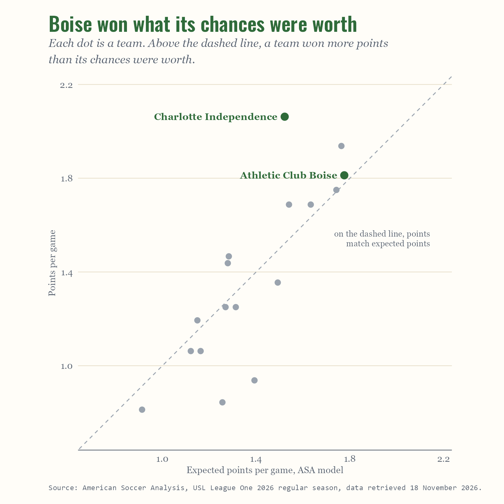
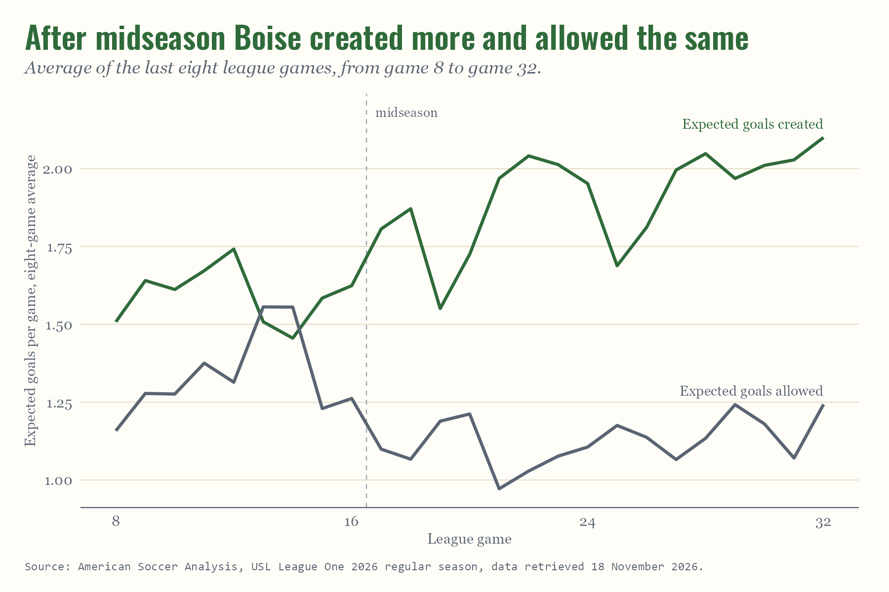

L’AC Boise ha raccolto quanto creato nella sua prima stagione
Nº 19 · calcio · 18 nov 2026
L’AC Boise ha raccolto quanto creato nella sua prima stagione
La prima stagione di Athletic Club Boise in League One, letta sui dati pubblici dei tiri: occasioni tra le migliori del campionato, punti all’altezza, una seconda metà più forte e una finale persa nel finale a Charlotte.
↩ torna a CalcioNella stagione regolare Athletic Club Boise ha creato e concesso occasioni che valevano quanti punti quelle di qualunque altra squadra della USL League One. Ha chiuso con quasi tutti i punti che quelle occasioni meritavano.
Nella seconda metà della stagione Boise ha creato più che nella prima senza concedere di più, e i suoi punti sono saliti ancora perché ha subito meno gol su occasioni di valore simile.
Il titolo è andato a Charlotte Independence, che ha raccolto molti più punti di quanti ne meritassero le sue occasioni: lo scarto più ampio del campionato.
In finale Boise è stata in vantaggio fino agli ultimi minuti, ma nelle due partite giocate negli stadi di casa di Charlotte i padroni di casa hanno creato di più anche a punteggio pari.
Athletic Club Boise ha chiuso la sua prima stagione in USL League One, il terzo livello del calcio professionistico americano, con una finale persa e un posto tra le squadre migliori del campionato per la qualità delle occasioni. Nella stagione regolare i suoi punti sono finiti vicini a dove quelle occasioni li collocavano, e la finale è andata 4-2 a Charlotte Independence, la squadra che ha superato le proprie occasioni più di chiunque altro.
Il risultato conta perché la prossima stagione Boise sale in USL Championship, il secondo livello, su invito della lega, come ha riportato KIVI. Una squadra che ha perso punti per sfortuna può aspettarsi di riaverli senza cambiare nulla, e i numeri di Boise non offrono questa consolazione, anche se descrivono una squadra migliorata nel corso dell’anno. Secondo Idaho News, il club è stato solo la seconda squadra di espansione a raggiungere la finale nella sua prima stagione.
Come si contano le occasioni
I dati vengono da American Soccer Analysis, ASA, il sito che pubblica dati avanzati sui campionati nordamericani, compresi i tiri della League One. Ogni tiro ha un valore in gol attesi, o xG: la probabilità che un tiro di quel tipo, da quel punto, diventi gol. La somma degli xG di una squadra dice quanti gol valevano le sue occasioni, e ASA trasforma gli xG di una partita in punti attesi, cioè i punti che quelle occasioni porterebbero.1
1 Il glossario di ASA definisce i punti attesi come «Expected team points earned based on xG (team model)».
Questo campionato chiede un metro suo. Nella stagione regolare le squadre della League One hanno segnato circa nove gol ogni dieci attesi, quindi restare sotto gli xG qui è normale. Da qui in avanti i gol di una squadra si misurano sul tasso del campionato e non su quello del modello.
Tra le prime tre per occasioni
Secondo ASA le occasioni di Boise valevano 1,78 punti attesi a partita, il valore più alto del campionato, di un soffio davanti a Union Omaha e Forward Madison. La base è stata la difesa: nessun’altra squadra ha concesso occasioni di valore più basso.

Nel grafico ogni punto è una squadra, collocata per punti attesi a partita in orizzontale e per punti a partita in verticale. Una squadra sulla linea tratteggiata ha raccolto quanto meritavano le sue occasioni, e una squadra sopra la linea ha raccolto di più. Boise è sulla linea, con 58 punti contro 56,8 attesi.
Quella corrispondenza quasi esatta è arrivata per una strada più stretta di quanto dica il totale. Sul tasso del campionato Boise ha segnato circa quattro gol in meno di quanto promettevano le sue occasioni e ne ha subiti circa tre in più di quanto valevano i tiri avversari. Le due punte con le occasioni migliori spiegano più di tutto l’ammanco in attacco: insieme hanno segnato 14 gol da occasioni che al tasso del campionato ne avrebbero prodotti circa 19.
Le partite strette hanno restituito i punti. Delle 25 partite di campionato che Boise ha pareggiato o deciso con un gol di scarto ne ha perse solo cinque, e una sola squadra ha fatto meglio in partite del genere.
Una seconda metà più forte
Le occasioni di Boise sono cresciute di valore nel corso dell’anno, da 1,57 gol attesi a partita nella prima metà del campionato a 2,03 nella seconda, mentre il valore di quelle concesse è cambiato appena.

Il grafico segue la media delle otto partite di campionato precedenti: la linea verde riporta gli xG creati da Boise e quella grigia gli xG concessi. Dopo la linea tratteggiata di metà stagione la verde sale mentre la grigia resta piatta. La crescita si è vista anche in trasferta, anche se su sette e nove partite fuori casa una differenza di quella misura rientra in quanto produce il caso.
I punti sono saliti più di quanto spieghino le sole occasioni. Nella seconda metà i punti attesi sono cresciuti di circa quattro e i punti veri di dieci, soprattutto perché Boise ha subito 16 gol su tiro dopo i 22 della prima metà, a parità di valore delle occasioni concesse. Una parte del livello della seconda metà si regge quindi su gol subiti al di sotto del valore delle occasioni concesse, uno scarto che potrebbe non durare.
Charlotte, 17 punti sopra le sue occasioni
Charlotte Independence ha chiuso prima con occasioni che per valore erano solo seste, e nei dati di ASA nessun’altra squadra si è avvicinata a meno di dieci punti da quel surplus.
Il surplus è venuto da tutte e due le aree. Sul tasso del campionato Charlotte ha segnato circa nove gol in più di quanto promettevano le sue occasioni e ne ha subiti circa dodici in meno di quanto valevano i tiri avversari. Così ha chiuso con la migliore differenza reti del campionato.
Scarti di questo tipo vanno in tutte e due le direzioni. Greenville Triumph SC e New York Cosmos sono rimaste ciascuna tra tredici e quindici punti sotto le proprie occasioni, mentre per il resto del campionato la dispersione tra punti e punti attesi è di circa sei punti in una stagione. I dati di tiro non dicono quanta parte del surplus di Charlotte venga dal portiere, dagli attaccanti o dagli errori degli avversari.
Calci d’angolo e trasferte
I calci d’angolo hanno dato a Boise il 15% dei suoi gol attesi, contro il 12% del campionato nel suo insieme, e nessuna squadra ha concesso meno da angolo. I due totali sono piccoli, meno di dieci gol in tutta la stagione, quindi bastano pochi colpi di testa in un senso o nell’altro per cambiare la classifica.
In media, in League One la differenza di xG di una squadra è stata di circa 0,9 gol a partita più favorevole in casa che in trasferta. Boise è stata l’unica squadra le cui occasioni in trasferta hanno superato quelle concesse, con un margine che il caso da solo può produrre.
Le ultime tre partite
Boise ha aperto i playoff come aveva giocato la stagione, con un 2-0 in casa su One Knoxville in cui non ha concesso quasi nessuna occasione. Contro Chattanooga Red Wolves le sono serviti i supplementari e un solo gol per passare, dopo aver tirato più del doppio dell’avversario.
La finale si è giocata allo Sportsplex at Matthews, uno dei due stadi in cui Charlotte ha giocato le partite in casa. Charlotte aveva vinto la stagione regolare, e con essa il fattore campo per tutti i playoff. Boise era in vantaggio all’intervallo, secondo Idaho News, ed era ancora avanti 2-1 negli ultimi minuti, prima che Charlotte segnasse tre gol nel finale.
Le occasioni spiegano la sconfitta meglio della sfortuna, anche se in modo meno netto di quanto dicano i totali. Su tutta la finale le occasioni di Charlotte valevano molto più di quelle di Boise, ma il 57% dei gol attesi di Charlotte è arrivato mentre inseguiva, quando qualunque squadra si spinge in avanti. A punteggio pari Charlotte ha comunque creato occasioni da 1,3 gol attesi contro 0,8 di Boise.
La partita di maggio all’American Legion Memorial Stadium, dove Charlotte ha giocato la maggior parte delle gare in casa, era andata allo stesso modo. A punteggio pari Charlotte aveva creato occasioni di gran lunga migliori, un rigore sbagliato compreso, e aveva vinto con un gol di scarto. A Boise, a settembre, l’equilibrio si è rovesciato e la partita è finita in parità.
Che cosa dice la stagione
Per le occasioni create e concesse, la prima stagione di Boise è stata quella di una squadra di vertice, e i punti sono stati all’altezza di quelle occasioni nel corso dell’anno. La seconda metà è stata più forte nelle occasioni e ancora di più nei risultati, aiutata da meno gol subiti. Charlotte, la campione, è andata oltre i propri numeri più di chiunque altro, e in casa ha superato Boise due volte.
Per lo staff e i tifosi di Boise, questa lettura cambia che cosa aspettarsi dalle prove dell’ultima stagione.
- Non aspettatevi un rimbalzo della fortuna su una stagione intera, perché in League One i punti di Boise corrispondevano già alle sue occasioni.
- Giudicate i primi mesi sulle occasioni create e concesse, perché in questo campionato la classifica si è allontanata da esse di tre punti o più per la maggior parte delle squadre.
La lettura si basa su una sola stagione in terza serie. La prossima porta avversari più forti e una rosa cambiata, e nulla nei dati della League One misura come le occasioni di Boise reggeranno un livello più in alto. Il modello di xG è di ASA, e nessuna fonte che questo pezzo ha potuto controllare pubblica quanto si adatti alla League One. Una stima sul solo campionato direbbe se i gol mancanti dipendono dal modello o dai giocatori. Il pezzo usa solo i dati di tiro e lascia fuori i valori di ASA per passaggi e recuperi. I dati pubblici di questo campionato, poi, non registrano gli infortuni.
Come è fatto questo pezzo. Dati dall’interfaccia pubblica di American Soccer Analysis per la stagione 2026 della USL League One, scaricati il 18 novembre. ASA registra tutte le partite della stagione regolare tranne due, entrambe in casa di Chattanooga. I gol attesi sono la somma degli xG di ASA per ogni tiro; i punti attesi sono il valore calcolato da ASA sul suo modello di xG per squadra, che differisce di poco dalla somma tiro per tiro. La stagione si divide dopo la prima metà delle partite di campionato, e una divisione all’inizio di luglio dà lo stesso quadro. I gol confrontati con gli xG escludono le autoreti, che non hanno un tiro, e ASA può ancora rivedere i tiri della finale nei giorni successivi. I grafici restano in inglese.
Federico Ninivaggi · 18 novembre 2026